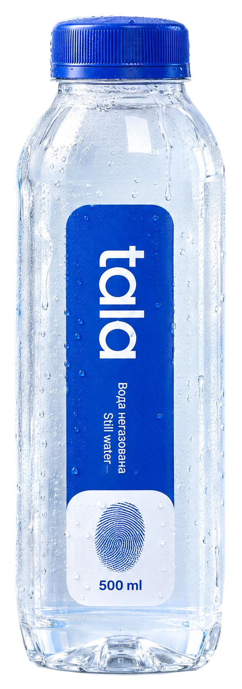
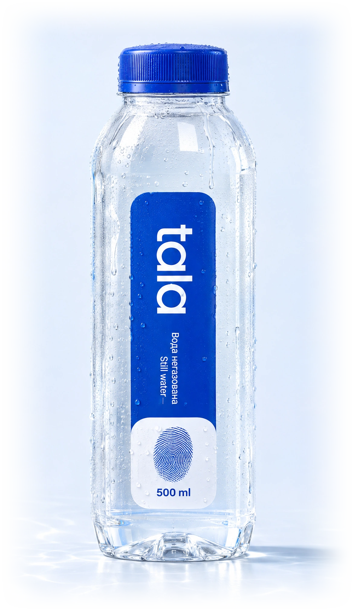
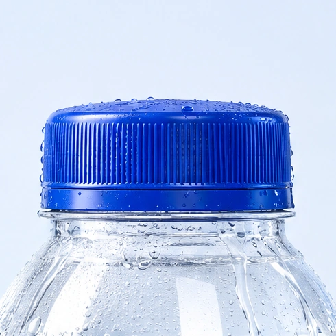
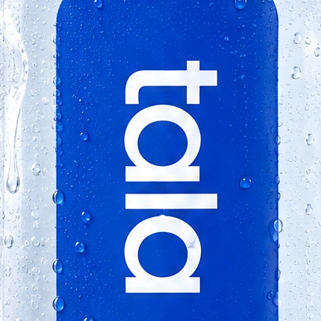
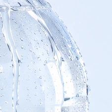

Колекція води
Пляшка в русі.
01 / 06Негазована · 0,5 л
Негазована
Слабогазована
Гортайте для перегляду
Гортайте для перегляду
Збираємо шлях покупця від вибору пляшки до підтвердження замовлення.
Показуємо, як працює технологія MELT і які умови TALA пропонує бізнесу.

Відтворюємо кожну погоджену форму тари, рельєф кришки, етикетку й конденсат на поверхні.




Команда зможе самостійно оновлювати асортимент, фотографії та матеріали про бренд.
Разом з Андрієм та Іллею звіряємо тару, етикетки й асортимент. Визначаємо умови покупки та партнерства.
Проходимо шлях покупця і партнера на мобільному прототипі. Погоджуємо великі екрани й компоненти дизайну.
Погоджуємо світло, матеріали й краплі на першій пляшці. Відтворюємо решту лінійки і налаштовуємо рух.
Збираємо сторінки й каталог, підключаємо кошик, погоджені сервіси оплати та доставки. Показуємо робочу версію.
Тестуємо оплату, заявки й швидкість анімації на телефонах. Публікуємо сайт на домені TALA і навчаємо команду.
Покупець обирає воду й оформлює замовлення. Партнер знаходить формат співпраці. Команда TALA веде обидва напрями з однієї адмінки.
У вартість входять дизайн, 3D-моделі погодженої лінійки, анімація, магазин, адмінка та запуск.
Звіряємо зразки тари, етикетки та сценарій покупки. Фіксуємо обсяг, графік і умови оплати в договорі.